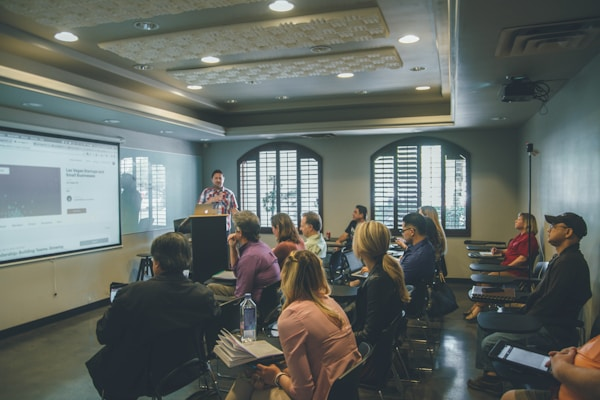
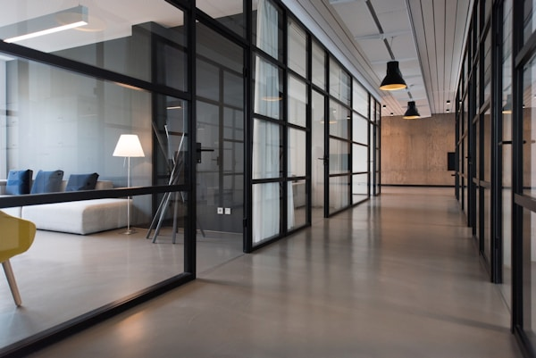

Home | My Story | A Day in My Life | Challenges | Goals



Being a working student is not an easy journey. My day is not only about attending classes and studying lessons. I also have work and responsibilities that I need to handle.
Every morning, I remind myself that I have two important things to balance: my education and my work. Sometimes my schedule becomes difficult, especially when school activities, assignments, and work responsibilities come at the same time.
There are days when I feel tired even before the day is finished. There are also times when I want to stop and simply rest. But whenever I feel this way, I remember the reason why I continue.
I want to finish my studies, improve my life, and create a better future. That dream gives me the strength to continue even when the journey becomes difficult.